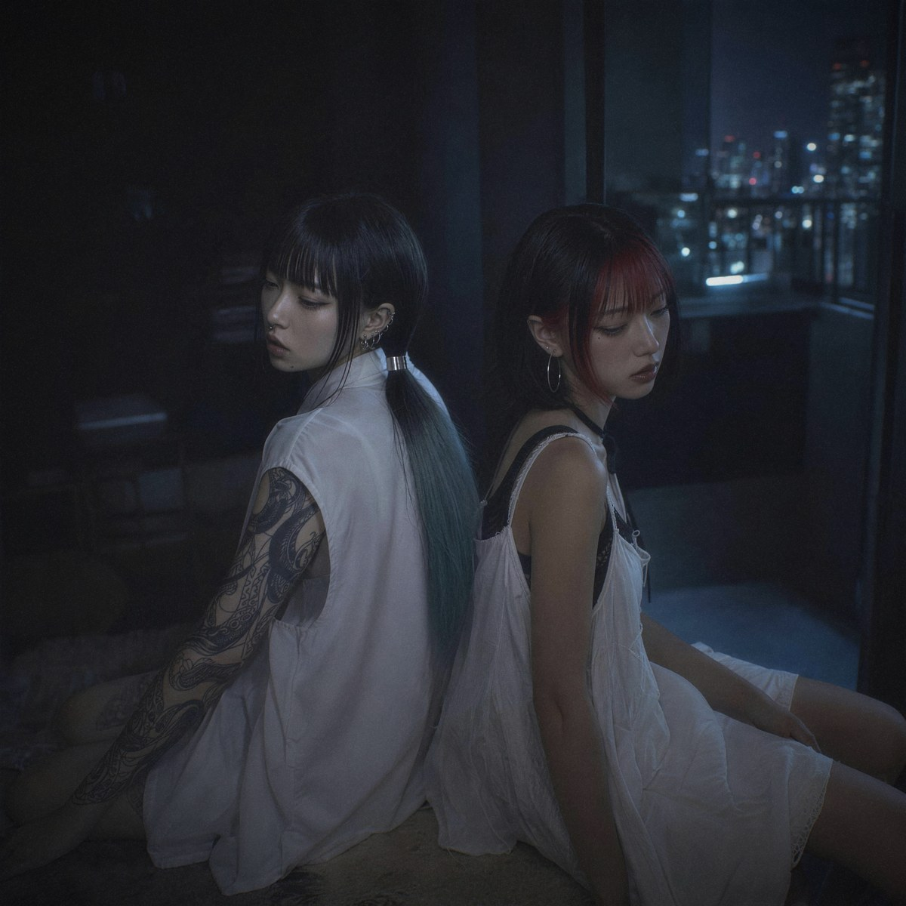
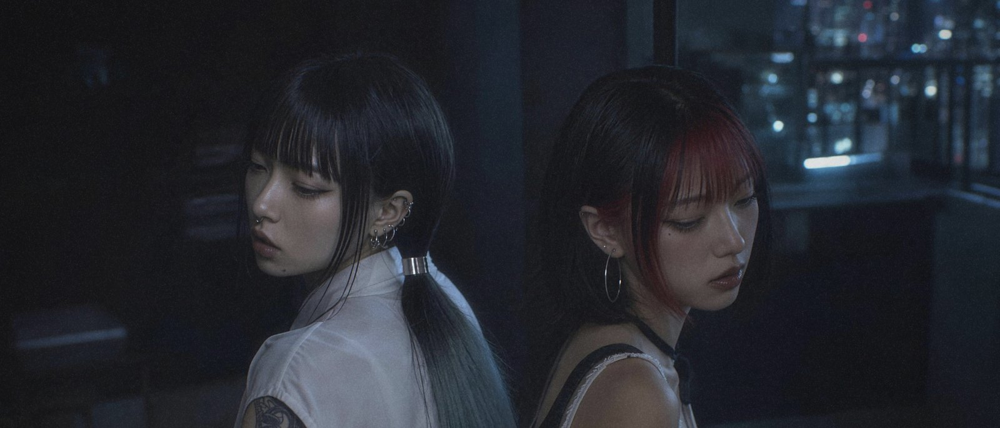
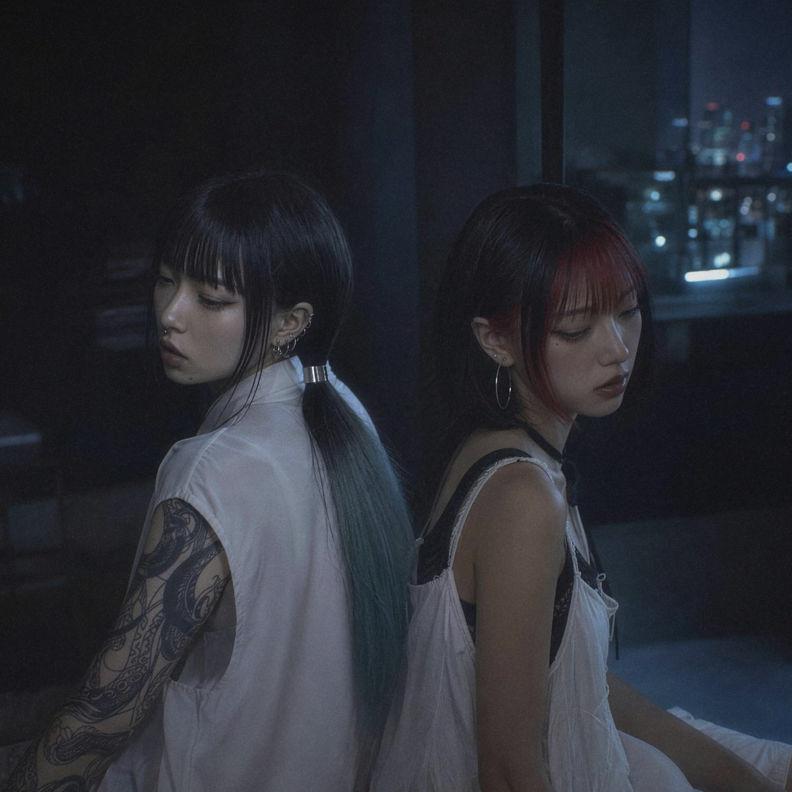

New Single
DARK DOPAMINE
Cry DOPESyuri × Sonar
- Release
- 2026年10月2日（金）0:00 配信October 2, 2026 (00:00 JST) — digital single
- Length
- 3:03
- Genre
- J-Pop／エレクトロニックJ-Pop / Electronic
- Lyrics
- 日本語・英語Japanese and English
- Based in
- 東京Tokyo
- Video
- MV は 10月3日（土）20:00 に YouTube で公開Music video on YouTube, October 3, 20:00 JST
リアクション・レビュー歓迎Reactions & reviews welcome
リアクション動画、レビュー、プレイリストやラジオでの紹介、ショート動画での使用を歓迎します。MV もそのまま使っていただいて構いません。
この曲は YouTube の Content ID に登録していません。当方から申し立てをすることはなく、収益化もそのままで大丈夫です。
できれば概要欄かキャプションに「Cry DOPE — DARK DOPAMINE」と配信リンク linkco.re/d72DCCvF を入れてください。
Reaction videos, reviews, playlist and radio features, and short-form edits are all welcome. The music video can be used as well.
This song is not registered with YouTube Content ID. You won't get a claim from us — keep your video monetized.
If you can, please credit "Cry DOPE — DARK DOPAMINE" and add linkco.re/d72DCCvF in your description or caption.
楽曲についてAbout the songDARK DOPAMINE
東京の2人組による、日本語と英語が行ごとに入れ替わる暗めのエレクトロ・ポップ。
Dark, bilingual electro-pop from Tokyo — a chorus built on "Han-bun, han-bun" (half, half).
「DARK DOPAMINE」は、手裏（Syuri）とソナー（Sonar）の2人組 Cry DOPE のデビューシングルです。半分眠ったまま、夜の部屋と外の街を行き来するような感覚を、暗めのエレクトロ・ポップにしました。
サビは「Han-bun, han-bun（半分、半分）」の反復と "Half of me is still asleep" の一行だけで組み、日本語と英語が行ごとに入れ替わります。ヴァースは「冷蔵庫に手紙」「名前は？／忘れた」「帰る？／どこに」といった短いやり取りで進みます。説明を足さない分、聴く人が自分の夜を重ねられる余白を残しました。
"DARK DOPAMINE" is the debut single from Cry DOPE, the duo of Syuri and Sonar. It turns the feeling of drifting between a dark room and the city outside, half asleep, into dark electro-pop.
The chorus is built from a repeated "Han-bun, han-bun" ("half, half" in Japanese) and a single line, "Half of me is still asleep", switching between Japanese and English line by line. The verses move in short exchanges — "A letter on the fridge", "Your name? / Forgot", "Going home? / To where?" — and leave room for listeners to bring their own nights.
プロフィールProfileCry DOPE

手裏（Syuri）とソナー（Sonar）の2人組。夜の部屋と、その外の街のあいだで鳴る暗めのエレクトロ・ポップを、日本語と英語で歌う。2026年10月2日、デビューシングル「DARK DOPAMINE」を配信。
Cry DOPE is Syuri and Sonar, a duo making dark electro-pop that sits somewhere between a late-night room and the city outside. They sing in Japanese and English. Debut single "DARK DOPAMINE" out October 2, 2026.
- Syuri手裏
- Sonarソナー
歌詞と英訳Lyrics & translationJA / EN
英訳はリアクション・レビュー動画の字幕に自由に使えます（テキスト版は下の素材から）。Feel free to use this translation for subtitles (a text version is in Downloads below).
素材DownloadsJPG / PNG / TXT

アーティスト写真Artist photo3000px · 2.6MB- アーティスト写真（横）Artist photo (wide)2660×1140 · 1.0MB
- ジャケットCover art3000px · 2.8MB

ロゴ（白）Logo (white)PNG · 3000×1200- ロゴ（黒）Logo (black)PNG · 3000×1200
- 冷蔵庫に 手紙
A letter on the fridge
「ごめん」 だけ
Just "sorry"歌詞と英訳Lyrics + translationTXT


写真・ジャケット・ロゴは、記事や動画（サムネイルを含む）に自由に使えます。トリミングも可。Photos, cover art and logos can be used freely in articles and videos, including thumbnails. Cropping is fine.
リンクLinks06
- ListenSpotify · Apple Music · LINE MUSIC ほか
- YouTube@crydopeofficial
- TikTok@crydope.official5
- Instagram@crydope.official
- X@cryDOPE
- Websitecrydope.github.io
連絡先ContactPress · Booking
取材、素材の追加（高解像度のスチル、音源ファイルなど）、紹介のご連絡はこちらへ。日本語・英語どちらでも返信します。For interviews, extra assets (hi-res stills, audio files) or features. We reply in English or Japanese.